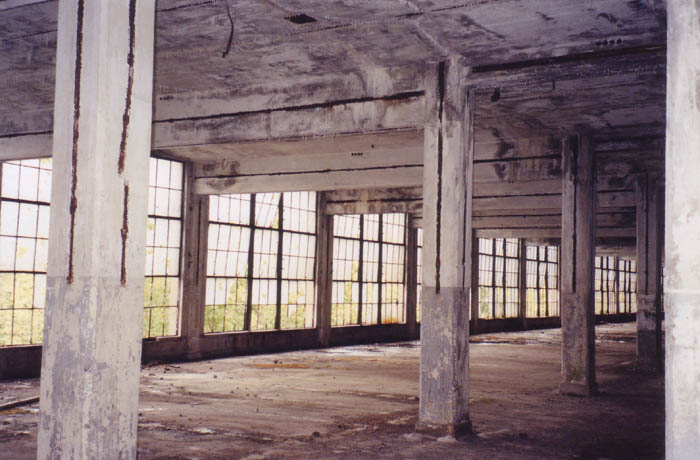
Most of the main building consists of big open floors without much more than broken multi-pane window walls and concrete pillars to distinguish them. Several of the windows have been pulled out entirely by vandals.
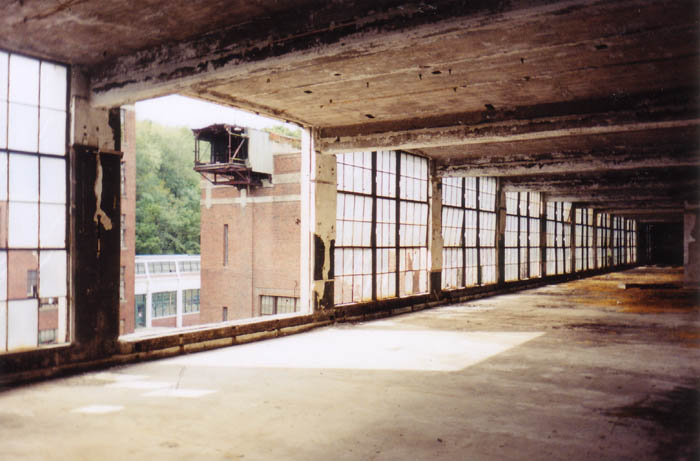
It's important to bear in mind that this building has been unoccupied for fifty years, which is longer than any other place I've been. The only things that are left are the things that couldn't be stripped out and scrapped; you'll find many of them in the basement.
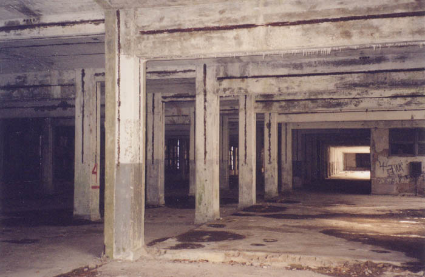
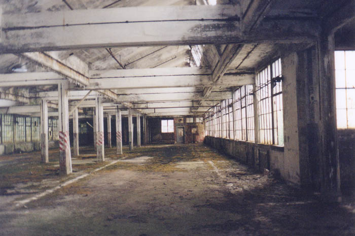
In the center of a few of the floors there are some identifying marks from the factory's better days, including a bathroom or two and the old elevator, which still has the rusty control lever inside.
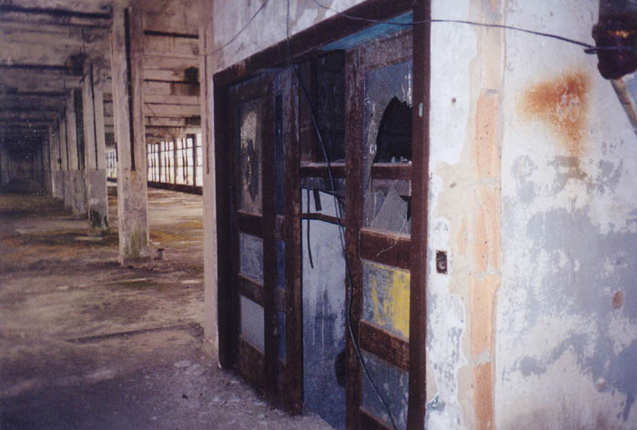
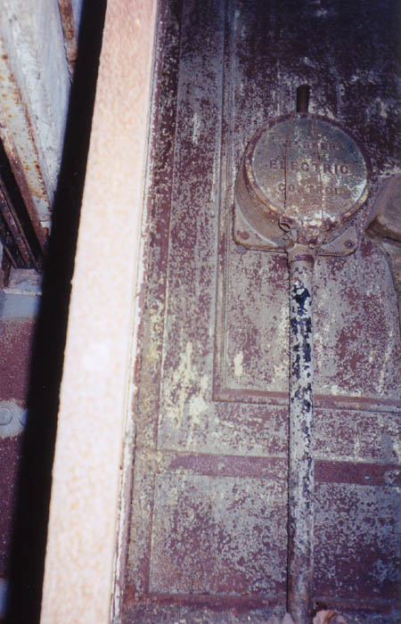
The top floor of the front building has a long elevated skylight that runs the length of the roof. Surprisingly, this is still intact.
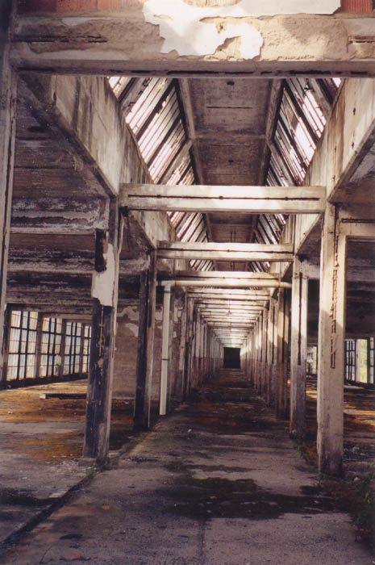
The rear building contains the old firing ranges and testing rooms, where the cartridge factory employees once tested their bullets and explosives. The rifle range consist of two long chambers with a block of wood to shoot from at one end and a big mound of dirt at the other to catch the rounds.
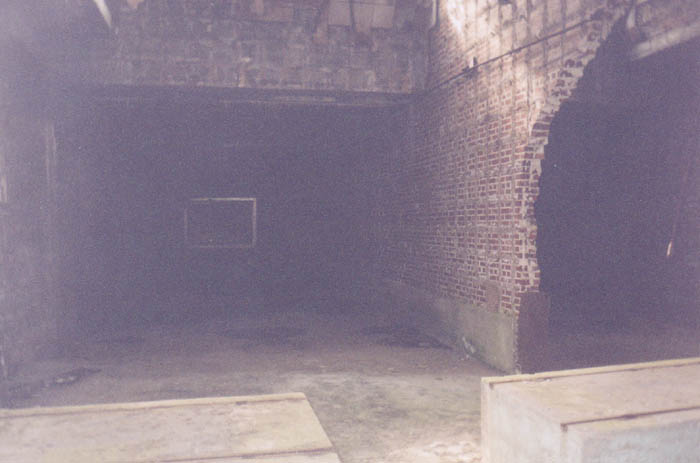
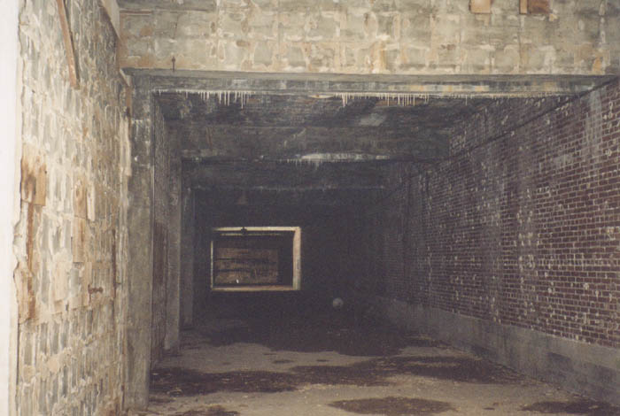
The handgun range is a small testing room with a door and a chest-level window to fire through. Today it looks like a bomb went off inside and blew half the bricks into the main room.
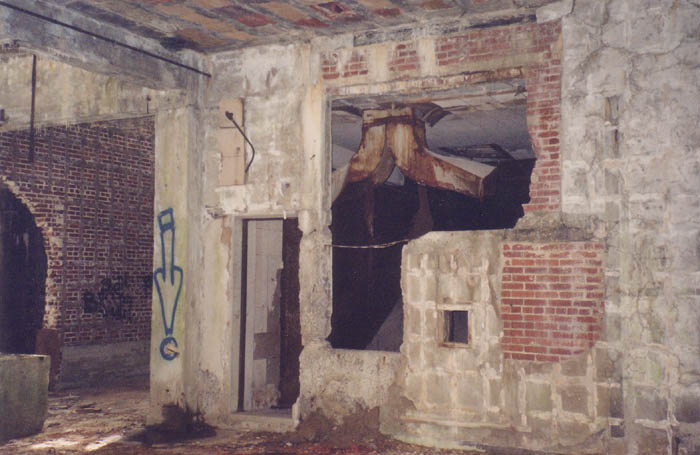
On the main floor in the front building are the two largest rooms in the factory. They have vaulted ceilings with skylights and ceiling-to-floor windows, and the first one resembles a greenhouse. Maybe it's because plants have started to grow inside.
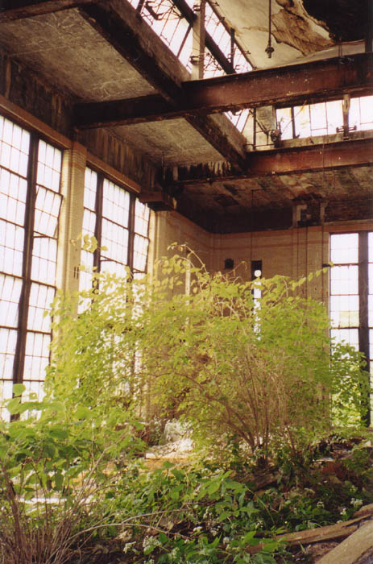
The second big chamber is the furnace room, which not surprisingly contains the furnace.
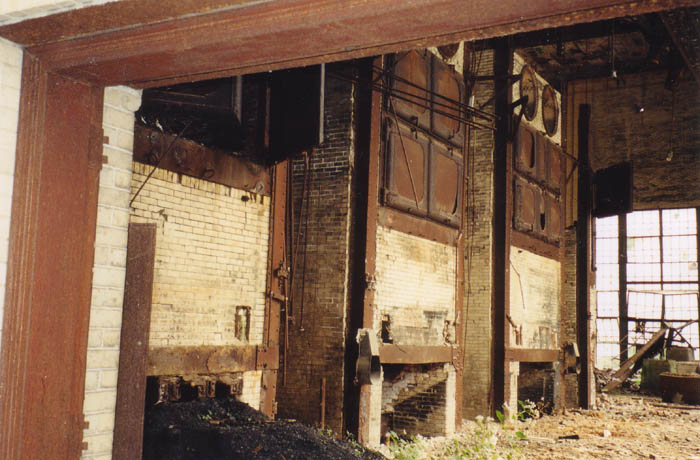
It's actually three furnaces side-by-side, maybe fifty feet tall, with metal doors and catwalks leading up to the higher levels. Behind the heavy doors the inside doesn't look much like a Freddy Krueger-style furnace; instead it looks like hundreds of metal canisters were laid on top of each other inside and caulked into place. According to an informed source, these are apparently called heating cones.
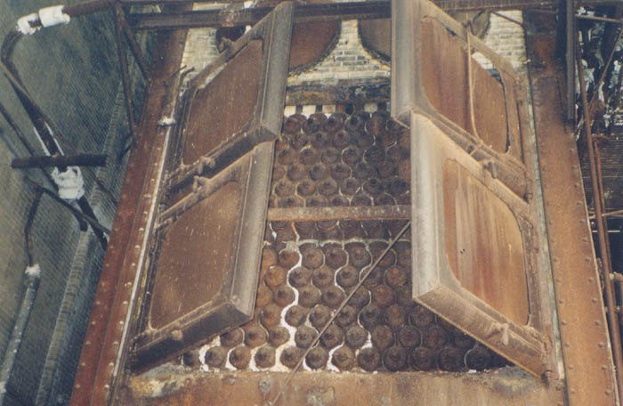
To see the really weird things on the main floors of the Peters Cartridge Co., you'll have to check out the hauntings section.
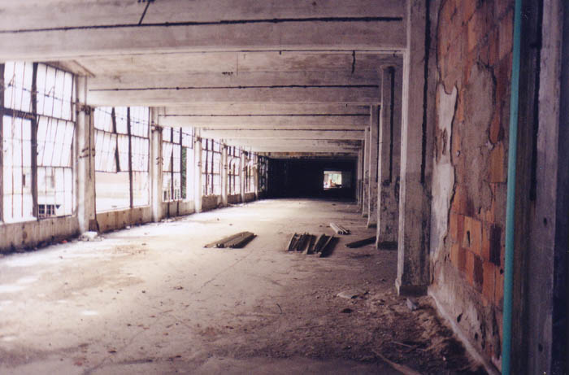
Main Page
. . . . .
Grounds + Outbuildings
. . . . .
Basement + Tunnels
. . . . .
Roof + Tower
. . . . .
Hauntings
Back